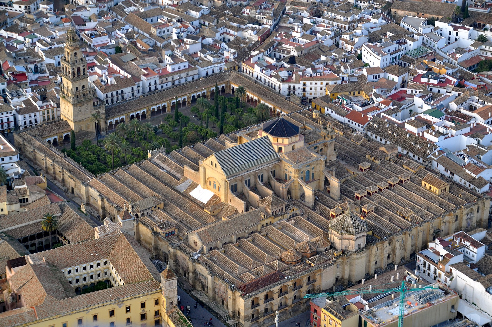
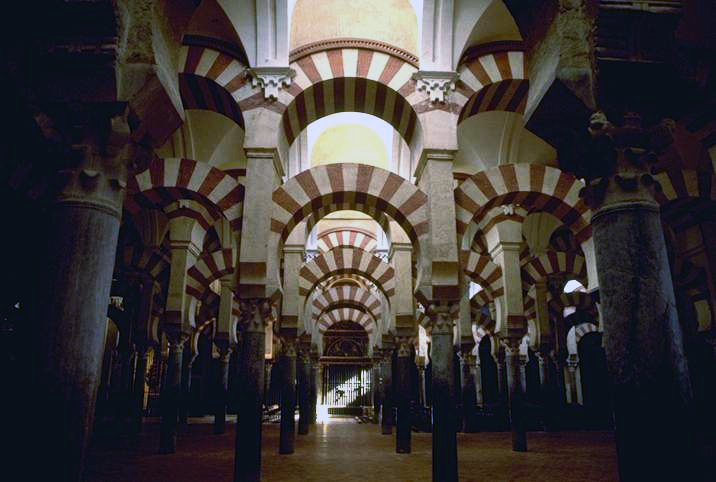

La mezquita o mezquita-catedral de Córdoba, «Santa María Madre de Dios» o «Gran mezquita de Córdoba», actualmente conocida como la Catedral de la Asunción de Nuestra Señora de forma eclesiástica, es un edificio de la ciudad de Córdoba, España. En 2019 superó los dos millones de visitantes, siendo su récord histórico y convirtiéndolo en uno de los monumentos más visitados de España.
Se empezó a construir como mezquita en el año 784; hasta hace poco se creía que tras la apropiación por los conquistadores musulmanes de la basílica hispanorromana de San Vicente Mártin y la reutilización de parte de los materiales, quedando reservada al culto musulmán, pero estudios arqueológicos más recientes disputan esta hipótesis. El edificio fue objeto de ampliaciones durante el Emirato de Córdoba y el Califato de Córdoba. Con 23 400 metros cuadrados, fue la segunda mezquita más grande del mundo en superficie, por detrás de la Mezquita de La Meca, siendo superada posteriormente por la Mezquita Azul (Estambul, 1588). El muro de la qibla no fue orientado hacia La Meca, sino 51º grados hacia el sur; esto era habitual en las mezquitas de al-Ándalus.
En 1238, tras la Reconquista cristiana de la ciudad, se llevó a cabo su consagración como catedral de la diócesis con la Ordenación episcopal de su primer obispo, Lope de Fitero. El edificio alberga el cabildo catedralicio de la Diócesis de Córdoba, y por su carácter de templo católico y sede episcopal, está reservado al culto católico. En 1523, bajo la dirección de los arquitectos Hernán Ruiz, el Viejo y su hijo, se construyó su basílica cruciforme renacentista de estilo plateresco.
Hoy todo el conjunto constituye el monumento más importante de Córdoba, y también de toda la arquitectura andalusí, junto con la Alhambra, así como el más emblemático del arte omeya hispanomusulmán. Declarada como Bien de interés cultural2 y Patrimonio Cultural de la Humanidad como parte del centro histórico de la ciudad, se incluyó por el público entre los 12 Tesoros de España en 2007 y fue premiada como el mejor sitio de interés turístico de Europa y sexto del mundo según un concurso de TripAdvisor.9
 